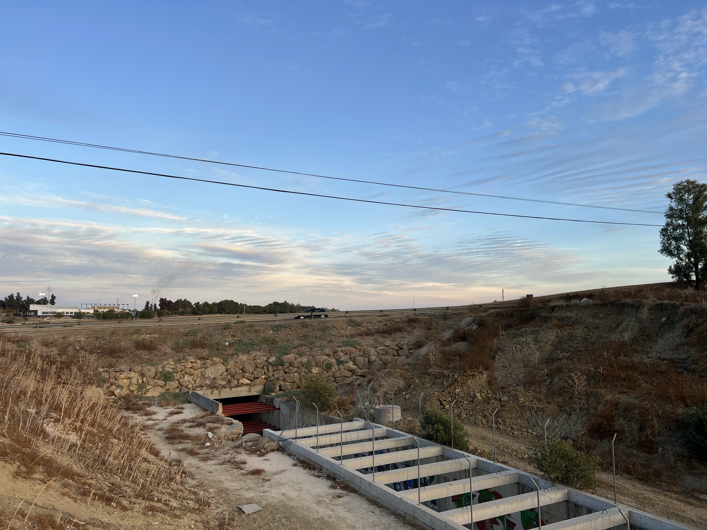
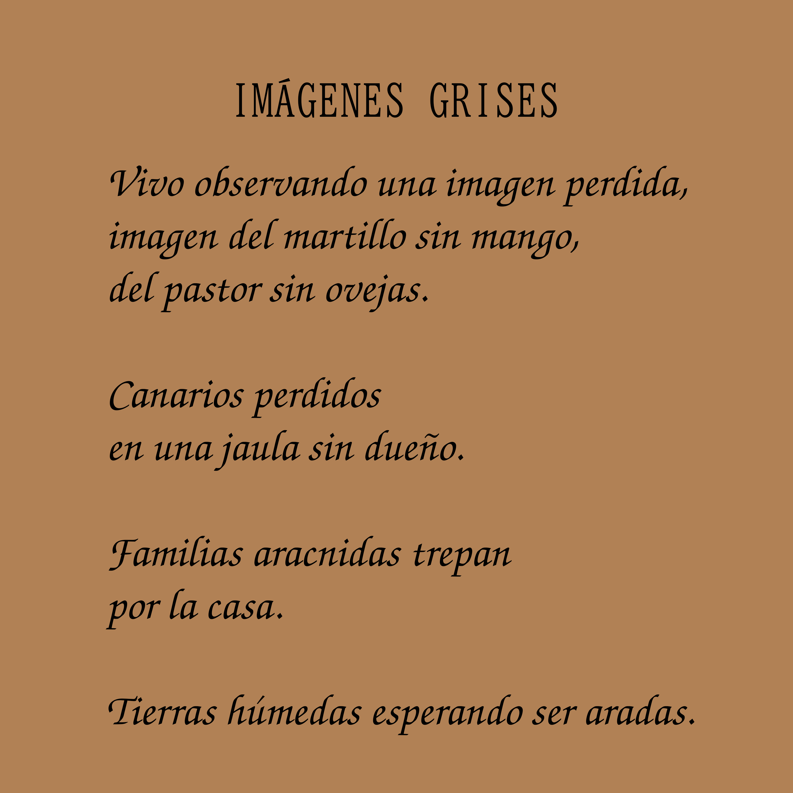
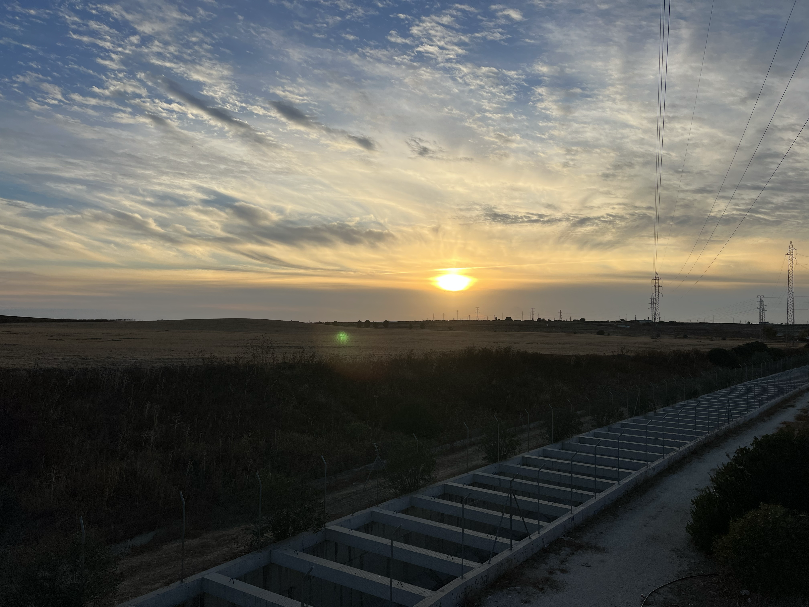

Law BOE finder
This is a BOE finder, in this web, you can find any BOE entry.
Github repository
Website
My full name is Rubén González Villalba.
I'm an IT student.
Age: 17
In my free time, I enjoy engaging in different kinds of activities that help me learn new skills.
I have a great amount of hobbies, some of those are:




This is a BOE finder, in this web, you can find any BOE entry.
Github repository
Website
Blog about general health and mental health.
Github repository
Website
This is an AI assistant inspired in Iron man's AI assistant for
PC.
Github
An English Assistant for Personal Use.
Github
Web scrapper & youtube video downloader made in java and using
some regex.
Github
Is an image to ASCII art converter.
Github
7%
Vivo observando una imagen perdida,
imagen del martillo sin
mango,
del pastor sin ovejas.
Canarios perdidos
en una jaula sin dueño.
Familias aracnidas trepan
por la casa.
Tierras húmedas esperando ser aradas.
La jungla del amazonas está de luto,
parte de su corazón
ha sido arrebatado.
Los animales, sin oidos, escuchaban
el angustioso rugir de las máquinas.
Se quedaron, vieron sus hogares desplazados,
sosteniendo
dolorosas y calientes
velas encendidas, decidieron seguir
viviendo
allí.
No se marchan,
se mantienen en el mismo lugar,
las
estrellas hablan de otros tiempos,
mientras que la cera
derramada de las velas,
mantiene a todos unidos.
Treinta y uno de octubre,
día en que conocí la luna.
Astro, que desprende una luz,
cómo solitaria vela
que arde
durante un eclipse,
Los animales,
cantan, bailan y se cortejan
alrededor
de ella.
Guía de un árbol,
que vaga por el bosque.
Nube que irrumpe
en cueva cerrada
y la llena
rompiendo,
rompiendo la roca,
rompiendo el cristal,
penetrando
en el fondo
de la montaña.
Hacia aquí caminan las lluvias
a paso ligero,
aullando durante la noche,
rugiendo durante el día.
Aún llueve,
un humilde ápice de sol
se muestra
complaciente
ante mi.
Curiosos vientos
desde el este me llaman,
vientos
que no saben mi nombre.
Mi ropa se afloja y el cuerpo flota,
cuando el reloj toca
el doce,
me encuentro caminando
por el techo azul de
la vida.